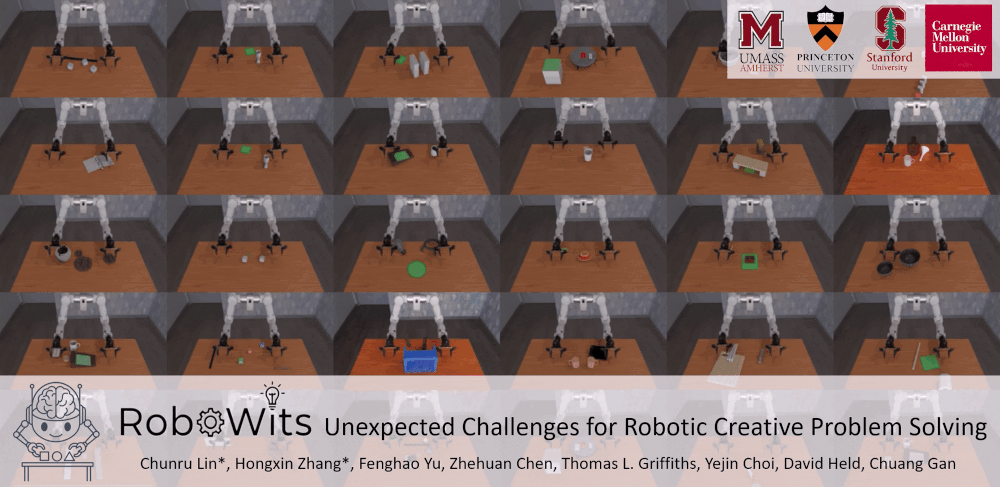

The ability to reason, adapt, and creatively solve problems under unexpected challenges is essential for robots operating in real-world environments. However, current robotic benchmarks primarily emphasize skill-level execution and provide limited insight into such cognitive reasoning capabilities. We introduce RoboWits, a bi-manual robotic benchmark designed to systematically evaluate cognitive reasoning, creative tool use, and robustness to unexpected conditions. To enable scalable construction of high-quality reasoning-centric unexpected scenarios, we propose an automated task generation pipeline formulated as a multi-agent cooperative framework, comprising agents for seed task generation and verification, metric generation, scene generation, and task mutation. Using the pipeline, we curated 30 diverse seed tasks and 200 mutated tasks with graded difficulty across geometry, material, and assembly-based reasoning. We benchmark popular robot policy models, pre-trained VLAs, and oracle state-based planners in both single-task fine-tuning and multi-task learning settings. Our results show that while pre-trained VLAs show some preliminary performance on the seed task under single-task fine-tuning settings, they struggle to perform on mutated tasks, implying their brittleness in manipulation tasks requiring non-trivial reasoning, strategy adaptation, and robustness to deceptive or constrained environments.
Our automated task generation pipeline consists of two main stages. Left: Seed task generation and verification at the specification (verbal) level. Right: A verified seed task is expanded into diverse creative problem-solving task variants through iterative mutation and verification, and is then instantiated with 3D scene configurations and executable evaluation metrics in the simulator to produce the final benchmark tasks.
Align Blocks
Retrieve Cube
Gap Retrieve
Pinch Card
Roll Up Ball
Dominos
Stand Pages
Hold Cup
Collect Screw
Place Tall Box
Ball Into Bottle
Cover With Lid
Stack Cubes
Stand Bulb
Ball Onto Tower
Cylinder Through Hole
Stack Bowls
Place Book
Raise Platform
Align Chopsticks
Retrieve Roll
Move Cubes
Balance Board
Retrieve Cube
Seed Task
Mutation 1 (Add irrelevant objects)
Mutation 2 (Fix two blocks)
Seed Task
Mutation 1 (Add irrelevant objects)
Mutation 2 (Add an obstacle)
Seed Task
Mutation 1 (Add irrelevant objects)
Mutation 2 (Replace pusher)
Seed Task
Mutation 1 (Replace coaster)
Mutation 2 (Fix coaster)
If you find our work useful, please consider citing:
@article{lin2026robowits,
title={RoboWits: Unexpected Challenges for Robotic Creative Problem Solving},
author={Lin, Chunru and Zhang, Hongxin and Yu, Fenghao and Chen, Zhehuan and Griffiths, Thomas L and Choi, Yejin and Held, David and Gan, Chuang},
journal={arXiv preprint arXiv:2605.30326},
year={2026}
}